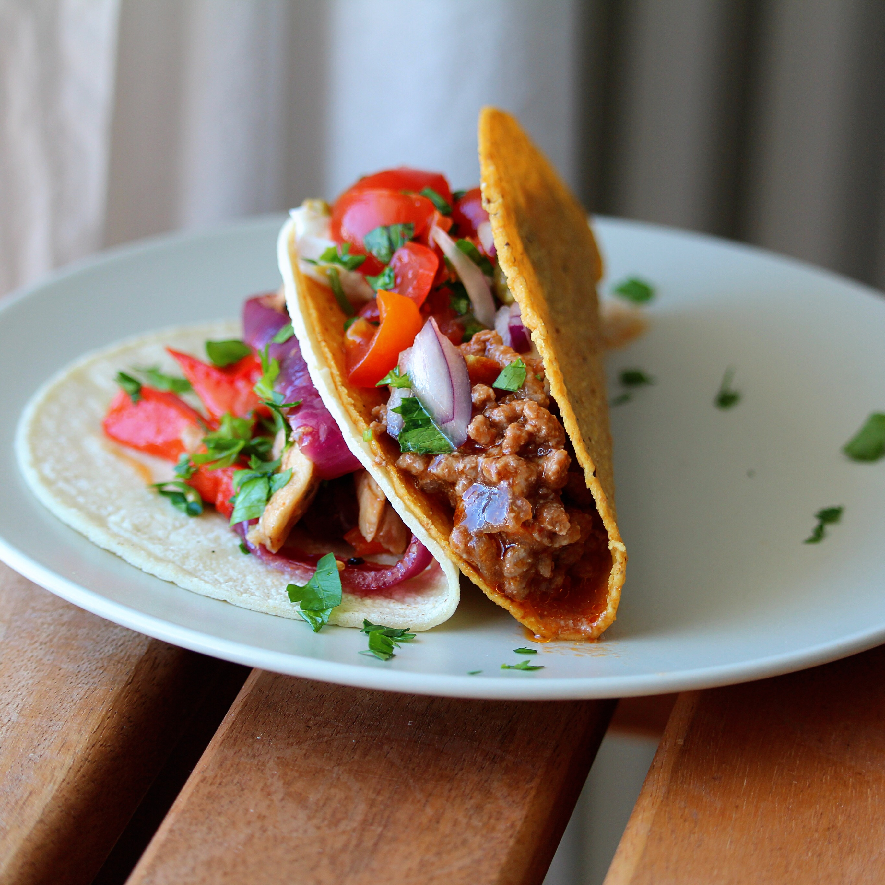

-
Chicken Marsala
A delicious, classic chicken dish -- lightly coated chicken breasts braised with Marsala wine and mushrooms. Easy and ideal for both a quick weeknight entree AND serving to company.Ingredients
- ¼ cup all-purpose flour for coating
- ½ teaspoon salt
- ¼ teaspoon ground black pepper
- ½ teaspoon dried oregano
- 4 skinless, boneless chicken breast halves - pounded 1/4 inch thick
- 4 tablespoons butter
- 4 tablespoons olive oil
- 1 cup sliced mushrooms
- ½ cup Marsala wine
- ¼ cup cooking sherry
Step 1
In a shallow dish or bowl, mix together the flour, salt, pepper and oregano. Coat chicken pieces in flour mixture.Step 2
In a large skillet, melt butter in oil over medium heat. Place chicken in the pan, and lightly brown. Turn over chicken pieces, and add mushrooms. Pour in wine and sherry. Cover skillet; simmer chicken 10 minutes, turning once, until no longer pink and juices run clear. -
Spinach, Feta, and Pine Nut Ravioli Filling
A delicious ravioli filling for fresh pasta.Ingredients
- 1 tablespoon olive oil
- 1 (10 ounce) bag fresh spinach
- 1 cup feta cheese
- ½ cup pine nuts
- 2 fresh pasta sheets
- 1 egg
- 1 tablespoon water
Step 1
Heat the olive oil in a large skillet over medium-high heat. Cook the spinach until fully wilted, about 2 minutes. Let cool, then squeeze the spinach to remove as much liquid as you can.Step 2
Combine the cooked spinach, feta, and pine nuts in a blender or food processor and pulse until it is the consistency of a fine paste. Beat the egg and water together in a small bowl.Step 3
To assemble the ravioli, brush the egg over a sheet of pasta. Drop the filling mixture on the dough by teaspoonfuls about one inch apart. Cover the filling with the top sheet of pasta, pressing out the air from around each portion of filling. Press firmly around the filling in whatever shape you wish (circles, squares) and then cut them apart. Press the tines of a fork around the edges of the pasta to seal each raviolo.Step 4
Fill a large pot with lightly salted water and bring to a rolling boil over high heat. Once the water is boiling, add the ravioli, stir gently, and return to a boil. Cook uncovered until the ravioli float to the top and the filling is hot, about 3 to 5 minutes. -
Maple Plank-Grilled Italian Stuffed Pork Chops
Thick pork chops stuffed with spinach, croutons, and Italian cheeses are grilled on a maple plank. Delicious! I serve these with steamed broccoli and glasses of chilled Riesling.Ingredients
- 1 large, maple grilling plank
- 4 (6 ounce) boneless pork loin chops, about 2 inches thick
- 2 tablespoons butter
- 1 onion, chopped
- 1 tablespoon chopped garlic
- 1 stalk celery, chopped
- 2 cups fresh spinach leaves
- 1 (14.5 ounce) can chicken broth
- 2 cups garlic seasoned croutons
- ½ cup shredded Italian cheese blend
- 2 tablespoons freshly grated Parmesan cheese
- 2 teaspoons fresh rosemary, chopped
- salt and ground black pepper to taste
Step 1
Preheat outdoor grill for medium-high heat. Prepare a maple grilling plank by soaking in water according to manufacturer's directions.Step 2
Place the pork chops on a clean, flat surface, and cut from one side through the middle to within one-half inch of the other side. Open the two sides and spread them out like an open book. Set aside until needed.Step 3
Melt the butter in a large skillet over medium-high heat. Stir in the onion, garlic, and celery; cook and stir until the onion is soft and transparent, about 5 minutes. Add the spinach, and cook until wilted, 3 to 5 minutes. Pour in the chicken broth, and add the croutons: stir until croutons absorb the broth. Remove from heat, and stir in the Italian cheese blend and the Parmesan cheese. Spoon the vegetable-cheese mixture into the pockets of each pork chop. Close one side of the pork chop over the filling. Place pork chops on the prepared grilling plank. Sprinkle with fresh rosemary, and season with salt and pepper to taste.Step 4
Cover and grill, turning once, until pork chops are no longer pink in the center and juices run clear, about 30 minutes. -
Crawfish Linguine
This is a simple meal that can be prepared in 25 minutes that is absolutely delicious. Serve with a salad and garlic bread for a complete meal.Ingredients
- 1 (8 ounce) package linguine pasta
- ½ cup butter
- ¼ cup olive oil
- 1 clove garlic, crushed
- 1 cup sliced mushrooms
- 1 pound crawfish tails
- ½ cup chopped green onions
- 1 cup half-and-half cream
- ⅓ cup grated Parmesan cheese
- ¼ cup chopped fresh parsley
- salt and pepper to taste
Step 1
Bring a large pot of lightly salted water to a boil. Cook pasta for 8 to 10 minutes, or until al dente; drain.Step 2
Melt butter with olive oil in a large skillet over medium heat. Saute garlic and mushrooms until tender. Stir in crawfish and green onions; reduce heat to low, and cook 5 minutes. Stir in half and half, Parmesan cheese, and parsley. Simmer for 5 minutes. Season with salt and pepper, and serve over hot linguine. -

Taco Meat
This recipe makes just the taco meat. You have to buy everything else, of course. Make a big batch and use for a multiple of different meals: add to bean burritos for a more hearty and tasty burrito, or add a can of beans (kidney, red, or pinto) and use for Frito® Pie, Navajo tacos, or taco salad.Ingredients
- 1 pound lean ground beef
- ½ teaspoon onion powder
- ½ teaspoon garlic salt
- ½ teaspoon celery salt
- ½ teaspoon ground cumin
- 1 (8 ounce) can tomato sauce, or more to taste
Step 1
Heat a large skillet over medium-high heat. Cook and stir beef in the hot skillet until browned and crumbly, 5 to 7 minutes.Step 2
Season beef with onion powder, garlic salt, celery salt, and cumin. Pour tomato sauce over the beef, stir to coat, and simmer until thickened, slightly, about 5 minutes. -
 Spring Salad
Spring Salad
People are surprised when they taste this salad with the odd combination of ingredients, but it's a very very good salad.Ingredients
- 12 slices bacon
- 2 heads fresh broccoli, florets only
- 1 cup chopped celery
- ½ cup chopped green onions
- 1 cup seedless green grapes
- 1 cup seedless red grapes
- ½ cup raisins
- ½ cup blanched slivered almonds
- 1 cup mayonnaise
- 1 tablespoon white wine vinegar
- ¼ cup white sugar
Step 1
Place bacon in a large, deep skillet. Cook over medium high heat until evenly brown. Drain, crumble and set aside.Step 2
Whisk together the mayonnaise, vinegar and sugar. Pour dressing over salad and toss to coat. Refrigerate until ready to serve.